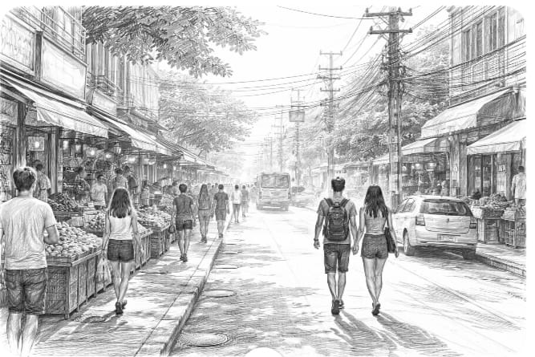
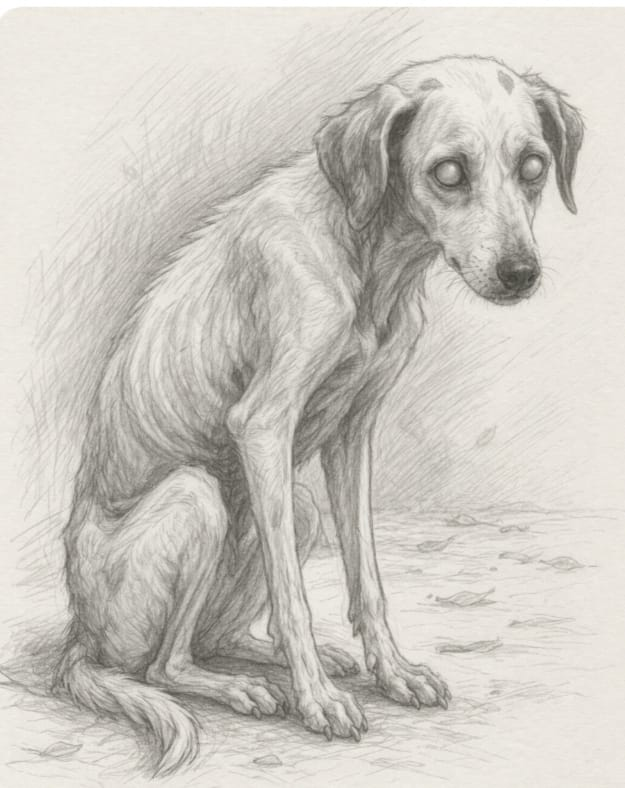

Era uma manhã quente como tantas outras. O calor subia do asfalto em ondas invisíveis, e o ar parecia pesado demais para pensamentos profundos.

Eu só queria ir ao mercado, comprar o de sempre, voltar para casa e seguir com um dia comum.
Mas foi ali, no meio do caminho, que a vi.
Havia algo estranhamente familiar nela.
Uma cadela pequena, de pelos ralos e manchados, corpo magro, quase curvado pela vida. Parecíamos íntimas — como se já tivéssemos nos encontrado antes — mas eu tinha certeza de que era a primeira vez.

Foi então que percebi seus olhos.
Doentes.
Opacos.
Quase apagados.
E ainda assim… viam.
Não viam como os nossos. Não buscavam formas, nem cores, nem movimentos.
Mas atravessavam tudo. Inclusive, a mim.
Senti um arrepio que não vinha do vento.
Tentei me aproximar, num impulso que nem eu compreendi direito.
Dei um passo, depois outro.
Mas ela recuou.
Apressou suas patinhas com uma agilidade inesperada para um corpo tão cansado.
Parecia saber.
Parecia sempre saber.
Talvez estivesse acostumada à rejeição.
Às mãos que se estendem e logo se recolhem.
À esperança que dura pouco.
Ao abandono que dura sempre.
Mesmo assim, não consegui ir embora.
Fiquei ali, parada, observando.
Ela não latia.
Não rosnava.
Não pedia.
Mas falava.
Havia algo naquela presença que me chamava — não com som, mas com sentido. Como se cada passo dela fosse uma frase, cada pausa, uma pergunta.
E eu, sem entender por quê, me senti sendo lida.
— O que você quer que eu veja? — pensei.
O mundo ao redor continuava como se nada estivesse acontecendo. Pessoas passavam, desviavam, ignoravam.
Um homem chegou a murmurar algo com desprezo ao vê-la.
Uma mulher puxou o filho para longe.
Mas eu não conseguia mais fazer parte daquele fluxo.
Ela parou… não completamente.
Apenas o suficiente.
Inclinou levemente a cabeça, como quem escuta com o corpo inteiro.
Seus olhos mortos — ou quase — encontraram algo em mim que eu mesma evitava encontrar.
E então, entendi.
Não era sobre ela.
Era sobre tudo aquilo que eu também não queria ver.
As partes rejeitadas.
As dores esquecidas.
As versões de mim que ficaram pelo caminho, esperando, como aquela cadela, por um olhar que não fosse de repulsa ou pressa.
Ela carregava, no corpo ferido, uma espécie de espelho.
E eu estava refletida ali.
De repente, minhas sacolas pareceram absurdas.
Minhas urgências, pequenas.
Minha pressa, vazia.
Ela voltou a andar.
Dessa vez, mais devagar.
Hesitei.
Por um instante, pensei em segui-la.
Em atravessar aquela distância invisível que nos separava.
Em fazer algo — qualquer coisa que quebrasse aquele silêncio cheio de sentido.
Mas não fui.
Fiquei.
Parada.
Assistindo.
Até que sua pequena silhueta se dissolveu no calor da manhã, como se nunca tivesse estado ali.
Quando finalmente entrei no mercado, tudo parecia diferente. As luzes eram duras demais.
As pessoas, rápidas demais.
Os produtos, organizados demais.
Nada ali combinava com o que eu tinha acabado de ver.
Ou de entender.
Voltei para casa sem lembrar exatamente o que comprei.
Mas levei comigo algo que não cabia em sacolas.
Desde aquele dia, nunca mais desviei o olhar com tanta facilidade.
Nem das ruas.
Nem de mim.
E, às vezes, quando o calor da manhã parece ondular o mundo outra vez, tenho a estranha sensação de que ela ainda está por perto.
Não para ser salva.
Mas para continuar me.